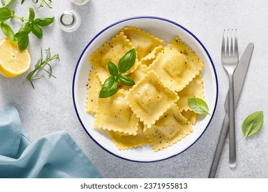

Ravioli Recipe
Back to Home

Ravioli is a classic Italian dish consisting of small pockets of pasta filled with various ingredients, typically cheese, meat, or vegetables. It can be served with a variety of sauces, making it a versatile and delicious meal.
Prep time: 10 minutes Servings: 6 Temperature: Boiling water for cooking
Ingredients
- Fresh ricotta cheese: 20 ounces (567 g)
- Freshly grated Parmesan cheese: 4 ounces (113 g)
- Nutmeg: 1/4 teaspoon
- Lemon juice: 2 teaspoons
- Kosher salt and freshly ground black pepper: To taste
- Classic fresh egg pasta: 1 recipe
- Extra-virgin olive oil: For serving
Equipments Needed:
- A food processor or mixing bowl
- A rolling pin or pasta machine
- A ravioli mold (optional)
- A fluted pasta wheel cutter or kitchen knife
- A large pot for boiling water
- A strainer or colander
Instructions:
- Lay a clean kitchen towel or a triple layer of lint-free paper towels on a rimmed baking sheet. Spread ricotta evenly over the surface of the towels. Top with a second clean kitchen towel or triple layer of paper towels. Press with hands or a second rimmed baking sheet and let rest for 5 minutes. Transfer ricotta to a medium bowl (it should come right off the towels).
- Add Parmesan cheese, nutmeg, and lemon juice to ricotta. Season to taste with salt and pepper and stir to combine.
- Meanwhile, divide dough into 4 even sections. Working one section at a time, with remaining sections tightly wrapped in plastic, roll dough through a machine until the sheet is just under 1/16 of an inch thick (typically the second-to-last setting). Cut the sheet in half to create 2 pieces of dough roughly 15 inches long and 5 inches across.
- If using a ravioli mold: Place the first sheet of dough over the metal base. Gently and evenly press the plastic mold down to make depressions in the dough. Remove and fill each depression with approximately 1 tablespoon of filling. Rap the mold once or twice to remove any air bubbles. Place the second sheet of dough over the surface and pat down. Run a rolling pin over the dough until the ridges beneath become visible. Flip the mold over and gently peel it away. If the ravioli remain stuck, rap the edge of the mold on the table. If the ravioli do not separate easily, use a fluted pasta wheel cutter or kitchen knife to complete the perforation. Cover the ravioli with a towel to prevent drying. Repeat with the remaining dough and continue to the next step.
- If working by hand: Fold the first sheet along its midline to make a light crease and re-open. Place 6 heaping tablespoons, half-inch apart, along the length of the lower half. Moisten the upper half with a pastry brush dipped in water and fold over, pressing down to remove air bubbles and create a seal around the filling. Using a fluted pasta wheel cutter or kitchen knife, cut between the filling for 6 even squares. Cover the ravioli with a towel to prevent drying. Repeat with the remaining dough.
- At this point, the ravioli can be frozen: Place the ravioli on a parchment-lined rimmed baking sheet and freeze completely. Transfer to a freezer bag, press out as much air as possible, and store in the freezer for up to 2 months. Frozen ravioli can be cooked straight from frozen (add 30 seconds to the cooking time).
- To cook the ravioli, bring a large pot of salted water to a boil. Cook the ravioli by submerging them in boiling water and cooking for 3 minutes (ravioli should float). Drain, reserving 1/2 cup of cooking liquid. Return the ravioli and the cooking liquid to the pot. Add 1/4 cup of olive oil and cook on high heat, stirring gently until the oil and pasta water emulsify into a creamy sauce, about 1 minute. Serve immediately, drizzling with more extra-virgin olive oil at the table.
Safety Notes: Ensure that the water is at a rolling boil before adding the ravioli. Use caution when handling hot water and utensils.
Substitutions: If fresh ricotta is not available, you can use store-bought ricotta. For a vegetarian version, omit the Parmesan cheese or use a vegan alternative.
Storage: Fresh ravioli can be stored in the refrigerator for up to 4 hours. Frozen ravioli can be stored for up to 2 months.
Pro Tips:
- Press the ravioli firmly to ensure they are well sealed.
- Use a fluted pasta wheel cutter for neat edges.
- The ravioli are ready when they float to the surface of the boiling water